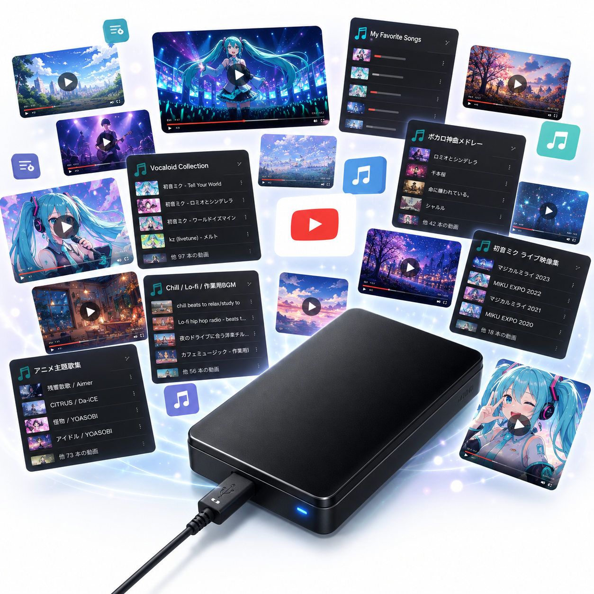

🔈プレイリスト 2026/06/18 11時作成

| 1 | 📁MV_スクロール歌詞/ new | 歌詞がスクロールしていくタイプの動画、主に公式映像、最新のMVあります！ |
| 2 | [YYYY] | 楽曲の発表年毎にサブフォルダを作成 |
| 3 | 📁THE FIRST TAKE/ new | 一発撮りのyoutube、The First Takeを幅広いジャンルで網羅 |
| 4 | 📁VOCALOID・VOICEROID/ | VOCALOID・VOICEROIDのMusicVideo |
| 5 | 📁ライブ映像/ | 最新のライブ映像、Youtubeに掲載されているもの |
| 6 | 📁Mp3/ 【フォルダ統合しました】 | mp3のフォルダ、背景動画を指定して歌えます |
| 7 | 📁★うたさちmp3/ | 映像なしのmp3フォルダ、主に2012年以前の古い楽曲 |
| 8 | 📁アニメ/ | アニメタイアップの楽曲。あいうえお順に分類 |
| 9 | 📁ゲーム/ | 美少女ゲームの関連楽曲。あいうえお順に分類 |
| 10 | 📁一般/ | アニメ・ゲーム以外の一般歌謡曲。あいうえお順に分類 |
| 11 | 📁未整理/ | 未整理のmp3 |
| 12 | 📁特撮/ | 特撮・ヒーローものの楽曲 |
| 13 | 📁Etc/ | その他分類の楽曲 |
| 14 | 📁VOC@LOID/ | 初音ミクなどボーカロイドの楽曲。あいうえお順に分類 |
| 15 | 📁★持込mp3/ new | 参加者が持込したmp3のフォルダ、自動スクロール歌詞付与 |
| 16 | [アーティスト名またはアルバム名]/ | アーティスト名またはアルバム名で分類 |
| 17 | 📁アニメシングル/ | アニメ番組タイアップのシングル曲、主に2011年以降のアニメ放映年代別に分類 |
| 18 | 📁アニメベスト／キャラソン/ | アニメのベストアルバムやキャラクターソングなどを作品別に分類 |
| 19 | 📁アニメ/ | アニメソング、主に2014年～2016年くらいの作品(未分類) |
| 20 | 📁アルバム/ | 声優アーティストやアニソンシンガーのアルバムやベストをアーティスト・アルバム別に分類 |
| 21 | 📁アーティスト/ | 声優アーティストやアニソンシンガーのシングルやノンタイアップ曲 |
| 22 | 📁サウンドトラック/ | アニメのサウンドトラック、音楽集。BGMなど歌詞なしの曲が多く含まれるので注意 |
| 23 | 📁ライブ映像/ | アーティストの歌詞付きライブ映像のフォルダ |
| 24 | [アーティストまたはライブ名] | ライブ映像をアーティストまたはライブの名前で分類 |
| 25 | 📁持込（個人別）/ | 個人ごとの持込楽曲を格納するフォルダ |
| 26 | [持込者] | 持込者名ごとにサブフォルダを作成 |
| 27 | 📁持込/ | カラオケオフ開催ごとの持込楽曲を格納するフォルダ |
| 28 | [YYYYMMDD] | カラオケオフ開催日付ごとにサブフォルダを作成 |
| 29 | 📁Movie/ | 歌詞付き動画フォルダ |
| 30 | 📁歌ってみた/ | ニコニコ動画のタグ「歌ってみた」の楽曲 |
| 31 | 📁静止画・スライドショー/ | 映像が静止画やスライドショーの楽曲 |
| 32 | 📁AMV/ | 映像がアニメ映像の楽曲、あいうえお順に分類 |
| 33 | 📁DL/ | 各種サイトから拝借した楽曲 |
| 34 | 📁MV_アニメ/ | アニメ映像のMusicVideo、主に公式映像や一部編集した映像 |
| 35 | 📁MV_アーティスト/ | アーティストのMusicVideo、主に公式映像や一部編集した映像 |
| 36 | 📁PV/ | アーティストやアニメのプロモーションビデオ |
| 37 | 📁VOC@LOID/ | 初音ミクなどボーカロイドの映像付き楽曲。あいうえお順に分類、未分類も多数 |
| 38 | 📁未整理/ | 未整理の映像付き楽曲 |
| 39 | 📄プレイリスト.html new | youtubeのプレイリスト「アニソン！」や「The First Take」など話題のコンテンツや作品シリーズ拡充中、スクロール歌詞で歌ってください！ |
| 40 | 📄マニュアル.html new | もちからWeb2 マニュアル（参加者編）、内容刷新しました |
| 41 | 📄一回お休み次の方どうぞ.mp4 | 順番を飛ばしてもらいたいときに登録してください |
| 42 | 📄配信カラオケ使いたい.mp4 | 運営に配信カラオケに切り替えてもらいたい場合、運営者が手動で対応します(笑) |
| うたさちHDDの特徴 | |
| コンテンツ | ・アニメソング、ゲームソング、ボーカロイド、ライブ映像中心のコンテンツ |
| 曲数 | ・曲数が結構多い (動画で6,000曲、mp3で28,000曲以上(ただし重複も多数)) |
| オンボーカル | ・ほとんどがオンボーカル(歌の音声あり)の曲 |
| 背景動画 | ・【もちからWeb】の機能により、mp3は「背景動画」と呼ばれるアニメ等の動画を選んで登録できる |
| プチリリ連携 | ・歌詞サイト【プチリリ】の歌詞データを基にしたタイムタグ付テキスト形式の歌詞表示 プチリリ:https://petitlyrics.com/ |
| スクロール歌詞 new |
・歌詞サイト【歌ネット】の歌詞をスクロール表示、歌詞が下から上へスクロールして流れていくタイプの歌詞表示 歌ネット:https://www.uta-net.com/ |
| youtube プレイリスト new |
・【Youtube Music】のプレイリストと連携し、一括ダウンロード＆スクロール歌詞付与＆一覧作成（バッチ機能） Youtube Music:https://music.youtube.com/ |
| カオス！ | ・コミュニティのメンバーがそれぞれ持ち寄ったコンテンツですので、雑然・混沌としています データの不備なども多々あると思いますが、どうぞ広い心でご利用のほどお願いいたします |
| もちからWebでの登録のしかた | |
| アーティストや 作品名で検索 |
・フォルダやファイル名に適合した一覧が表示されるので、選んで登録。 ただし、フォルダやファイル名に表記の揺らぎがありますので、ヒットしない場合は検索キーワードをいろいろ変更して試してみてください。 |
| フォルダを たどって |
・ジャンル別のフォルダをたどって、めぼしいものを探してみてください。 懐かしい曲、思いもよらない曲が見つけられるかもしれません。 |
| プレイリスト new |
・【Youtube Music】のプレイリストと連携された楽曲一覧が、 プレイリスト配下 に「？？？？.html」形式で作成されています。 楽曲がサムネイル付きで一覧表示されるので、ここから選択してください。 |
| オフボーカル | ・オフボーカルがいいなあ、という方は、ファイル名に “(off vocal)”,“(off)”,“(instrumental)”,“(inst)”等のついた曲を選んでみてください。 mp3ファイルだったらあるかも。なかったらご容赦のほどを。 |
| テレビサイズ | ・逆に、ファイル名に “(TV size)”,“(Anime ver)”,“(short ver)”等のついた曲は1分30秒のショートバージョンです。 スクロール歌詞などは正しく表示されませんので、登録しないようお願いします。 |
| 歌いたい曲が ないなあ |
持込大歓迎！ もちからHDDにない楽曲は自分で作成して持込を。 ・歌詞埋め込み動画(ハードサブ) ・歌詞ファイル付与動画(ソフトサブ、ass形式ファイル) ・タイムタグテキスト形式mp3(txt形式ファイル) ・Youtubeのプレイリスト、事前に情報をいただければ次回には作成して持ってきます。 ・id3形式のタグがついたmp3を持ち込むだけでも、スクロール歌詞を付与できます。事前にファイルをください。 |
2026/06/20 (酒)持込カラオケ 赤坂まねきねこ ・もちからWeb2への移行にともなって、説明内容刷新 ・mp3フォルダの統合 2025/07/20 (酒)持込カラオケ 上野広小路まねきねこ 2025/7/12後のコンテンツ整理 ・mp3フォルダの統合 mp3 → Mp3\★うたさちmp3 mp3_スクロール歌詞 → Mp3\★持込mp3 もちから連携 → mp3 ・もちから連携配下の歌詞未付与ファイルにスクロール歌詞大量付与（4000曲くらい！） 2024/10/26 (酒)持込カラオケ 上野中央まねきねこ２回目向け ・スクロール歌詞大量入荷に伴いフォルダ構成の見直し \MV_スクロール歌詞 ├ [YYYY] └ THE FIRST TAKE 2024/4/14 Windows11対応、新PC移行 (大宮運用試験向け) ・歌詞Netから取得生成するスクロール歌詞ジェネレータに対応 \Movie\MV_スクロール歌詞 2022/6/11 まねきねこ２回目 ・はじめにお読みください（うたさちHDDページ）整備 以降、システムに対する変更とコンテンツに対する変更を分けて記載することにします。コンテンツ修正はこちらに。 ・フォルダ構成を整理、統合化 「_NEW」フォルダはもはやNEWでもなんでもないので、「未整理」に プチリリ連携\シングル がノンタイ中心のアーティスト分類だったので プチリリ連携\アーティスト に統合 ・bgvの背景動画ジャンルを整理 声優ラジオ →声優 に統合 ライブ →声優 に統合 実写 →映画 に統合 静止画 →汎用 に統合 街 →汎用 に統合 北米版 →MMD に統合 2022/5/13 コロナ後初、まねきねこ初OFF ・背景動画：破損あり、旧HDDから回収 ・背景動画：いくつか追加＆修正 ・「持込\げろりん」配下を整理して以下に展開 \Movie\MV_アーティスト \Movie\MV_アニメ